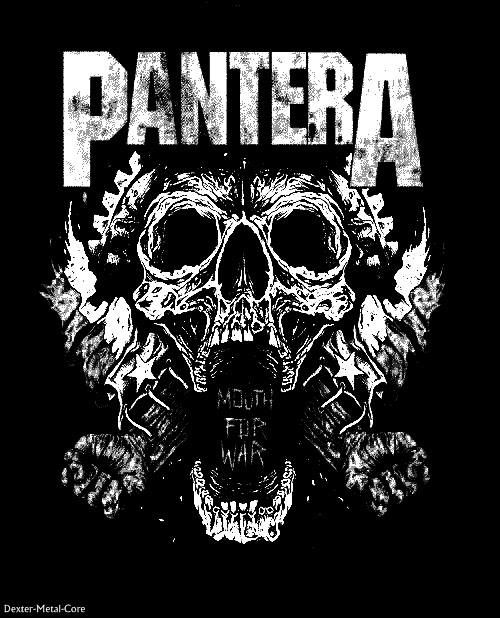
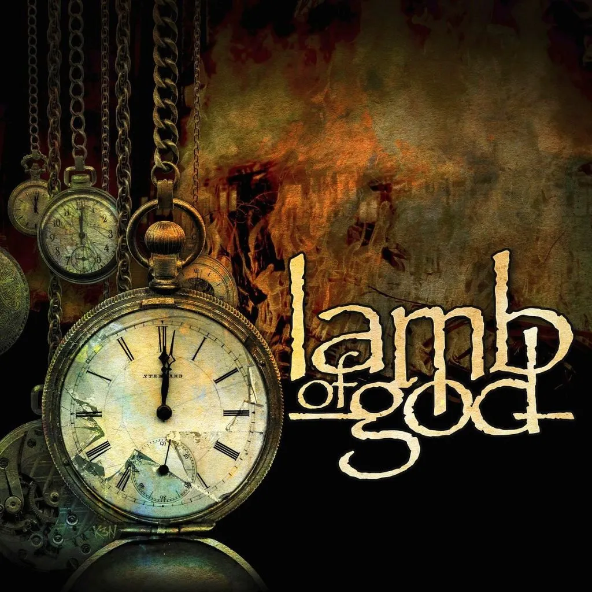
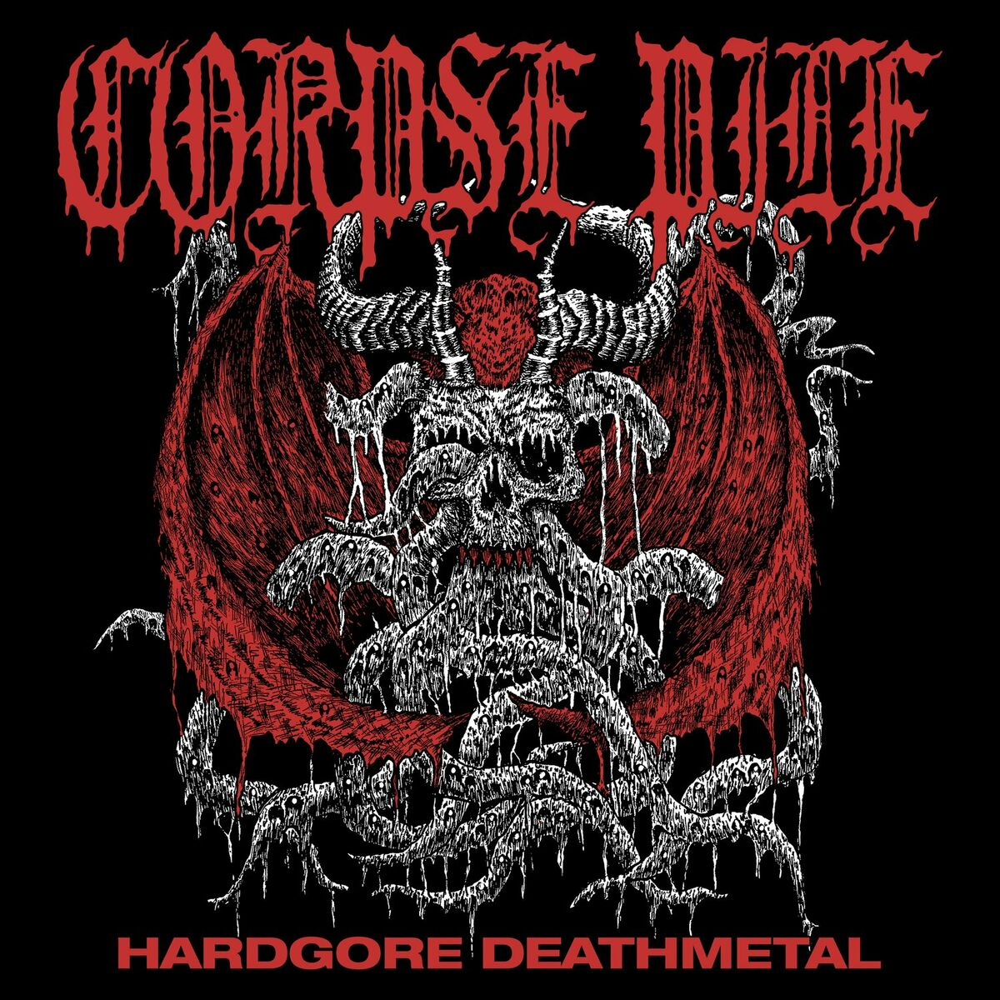
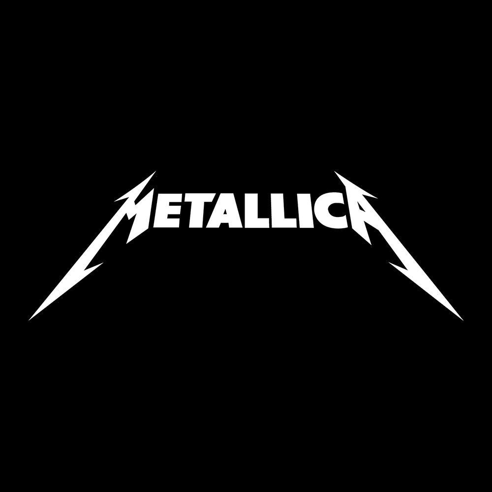

Bueno, no hay mucho que decir mas que esta es la banda mas importante dentro del thrash metal, Dave mustaine pudo sacar adelante una banda llena de drogadictos y convertirla en lo que es hoy en dia.

Nada que decir, la mejor banda de la historia, no tiene un solo tema malo. Lo unico cuestionable es su primer etapa y sus polemicas relacionadas a varias ideologias politicas

La mejor y mas importante banad del metal moderno, saben mezclar y diferenciar perfectamente entre lo brutal y lo pesado. Haciendolos tambien de los mejores compositores tanto insstrumentales como liricos
Infravaloradas
Una banda muy poco conocida pero que e muy buena, saben mezclar diferentes estilos pesados con musica mas tranquila, destaco sobre todo al guitarrista que e elmejor en el ambito del metal argentino moderno

Sencillamente lo mejor del under, cuentan con los riffs mas brutales y los mejores guturales que vas a escuchar entu vida, la verdadque merecen muchomas reconocimiento del que obtienen
Sobrevaloradas
Bueno, estas son algunas bandas que me parecen que estan sobrevaloradas, seguramente conozcan todas

No son ni la mejor banda de su subgenero, perdieron su escencia mientras dave mustaine continuo con su legado, mejorando y perfeccionando el thrash metal, aunque esto no quita que no sea una buena banda